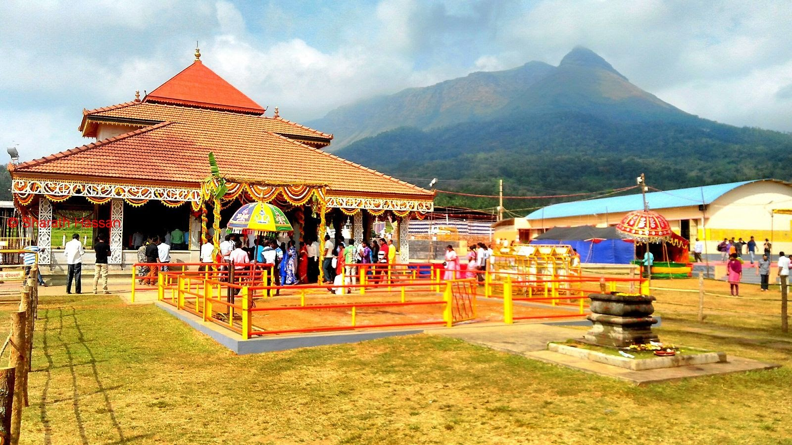
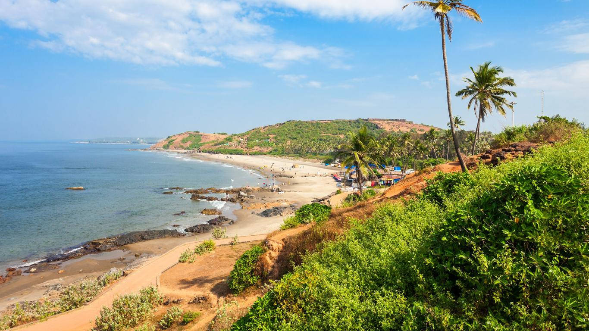
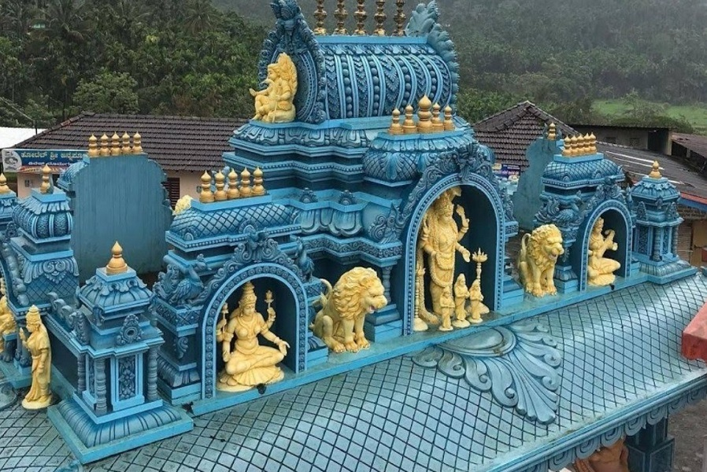

Chikkamagaluru · Karnataka · Since 2014
Explore the Beauty of Chikkamagaluru with Nithesh Tours And Travels
Journeys through
Discover unforgettable journeys across Karnataka and South India with expertly curated travel experiences, comfortable vehicles, and personalized service.
- Mullayanagiri
- Hebbe Falls
- Kemmangundi
- Baba Budangiri
- Sringeri
- Kudremukh
About Us
A decade of guiding travellers through the Western Ghats
At Nithesh Tours And Travels, we believe travel is more than visiting destinations it is about creating lifelong memories, experiencing nature, and discovering new cultures. Our goal is to provide safe, comfortable, and unforgettable journeys for every traveler.
With more than a decade of experience in the travel industry, we specialize in customized travel packages, local sightseeing, family tours, adventure trips, temple visits, and airport transportation across Chikkamagaluru and South India.
Read Our Story
0Years Experience
0Happy Customers
0Trips Completed
0Customer Satisfaction
Featured Packages
Chikkamagaluru tour packages travellers love
Fixed-departure favourites that can be fully customised to your dates, budget and pace.



 Bestseller
Bestseller5 Day Signature Chikkamagaluru Tour
5 Days / 4 Nights
Our most complete Chikkamagaluru itinerary — sunrise peaks, jeep-ride waterfalls, Hoysala temples, Bhadra safari and the sacred Sringeri–Kudremukh circuit.
- Mullayanagiri sunrise & Z Point trek
- Hebbe and Jhari Falls jeep rides
- Bhadra Tiger Reserve safari
- Belur, Halebidu & Sringeri temples
 Weekend
Weekend Luxury
Luxury
Why Choose Us
Travel planned by people who live here
From the first WhatsApp message to the final drop-off, every detail is handled by a local team that treats your trip like their own.
Local Experts
Born and raised in Chikkamagaluru we know which waterfall is flowing this week and which viewpoint is fog-free at 6 AM.
Transparent Pricing
Detailed quotes with kilometres, tolls, parking and driver allowance written down. No surprise charges at drop-off.
Well Maintained Fleet
Sanitised, insured and regularly serviced vehicles from hatchbacks to 12 seater Tempo Travellers.
Safety First
Verified drivers, live location sharing, first-aid kits and safe ghat road driving practices on every trip.
Fully Customisable
Your dates, your pace, your budget. Add treks, temples, safaris or estate stays to any itinerary.
24x7 Support
Real humans on WhatsApp and phone before, during and after your journey including late night airport runs.
Destinations
Where would you like to wake up tomorrow?
Curated road trips across six South and West Indian states, all starting from Chikkamagaluru or your doorstep.

Karnataka
Chikkamagaluru, Coorg, Hampi, Jog Falls and the whole Western Ghats belt.
Explore Karnataka
Andhra Pradesh
Tirupati darshan, Araku Valley, Gandikota canyon and Lambasingi frost.
Explore Andhra Pradesh
Tamil Nadu
Ooty, Kodaikanal, Coonoor tea gardens and grand temple towns.
Explore Tamil Nadu
Kerala
Munnar tea hills, Alleppey houseboats, Thekkady spice trails and beaches.
Explore Kerala
Maharashtra
Mahabaleshwar, Lonavala, Shirdi and the Ajanta–Ellora caves.
Explore Maharashtra
Goa
North and South Goa beaches, forts, Dudhsagar Falls and sunset cruises.
Explore Goa
Our Fleet
Comfortable vehicles for every group size
Hatchback to 17-seater Tempo Traveller — sanitised, insured and driven by verified hill-road experts.
 4 seats
4 seatsHatchback
Swift · WagonR · Celerio
Budget friendly city rides, solo travellers and couples exploring Chikkamagaluru town and nearby viewpoints.
Check Availability 4 seats
4 seatsSedan
Dzire · Etios · Aura
Extra boot space and a smooth ghat-road ride — the favourite choice for small families and airport transfers.
Check Availability
6–7 seatsSUV
Innova Crysta · Ertiga · Xylo
High ground clearance for estate roads, waterfalls and hill climbs with comfortable seating for families.
Check Availability 21 seats
21 seatsMini Bus
Force Urbania · Tavera
Great for extended families and friend groups who want to travel together in one vehicle.
Check Availability 12 seats
12 seatsTempo Traveller
12 seater push-back
Air-conditioned group travel with music system, ample luggage space and experienced hill drivers.
Check Availability 24×7
24×724×7 Airport Taxi
Bengaluru, Shimoga, Mangaluru, Mysuru and other cities
On-time pickups and drops with flight tracking, name board meet-and-greet and fixed transparent fares.
Check Availability
Gallery
Moments from the misty hills
Real frames from our tours across coffee estates, waterfalls, temples and jungle trails.


Testimonials
Loved by 1000+ travellers
Real feedback from families, couples, corporate groups and solo travellers who explored the Western Ghats with us.
FAQ
Frequently Asked Questions
Everything travellers ask us before booking a Chikkamagaluru trip.
What is the best time to visit Chikkamagaluru?
September to February is the best time for Chikkamagaluru tours. Post-monsoon months bring lush green hills, full waterfalls and clear sunrise views from Mullayanagiri. June to August is ideal if you love heavy mist and roaring falls.
How many days are enough for a Chikkamagaluru trip?
Two days cover the main viewpoints, three days add waterfalls and temples, and our five day Chikkamagaluru package covers peaks, waterfalls, Hoysala temples, wildlife safari and Sringeri comfortably without rushing.
Do you provide taxi service in Chikkamagaluru?
Yes. We offer Chikkamagaluru taxi service with Hatchback, Sedan, SUV, Mini Van and Tempo Traveller options for local sightseeing, outstation trips and airport transfers, available 24×7 with experienced ghat-road drivers.
Which airport is nearest to Chikkamagaluru?
Mangaluru International Airport is about 160 km away and Kempegowda International Airport, Bengaluru is about 250 km. We provide airport taxi from both, including late-night pickups with a name board.
Can you arrange a jeep for Hebbe Falls and Jhari Falls?
Yes. Private vehicles are not allowed on the final stretch to Hebbe Falls and Jhari Falls. We pre-book the local jeep ride so you avoid long queues, and the cost can be included in your package.
Is Mullayanagiri suitable for elderly travellers?
Yes. The road goes almost to the top and only around 400 steps remain to the temple. Elderly guests can enjoy the views from the parking area and Seethalayyana Giri, which needs no climbing.
Do you offer customised tour packages?
Every itinerary is customisable. Share your dates, group size, budget and must-visit places and we build a personalised plan covering Chikkamagaluru, Karnataka or wider South India.
What vehicles are available for group travel?
For groups we provide 12-seater and 17-seater Tempo Travellers, Mini Vans and multiple SUVs with a coordinator. All vehicles are sanitised, insured and driven by verified local drivers.
Are hotel and homestay bookings included?
We can include coffee estate homestays, budget hotels or luxury resorts in your package. We only recommend properties we have personally inspected in and around Chikkamagaluru.
How do I book a tour with Nithesh Tours And Travels?
Call or WhatsApp +91 94822 42996, or submit the enquiry form on this website. We share a detailed itinerary and quote, and confirm your trip with a small advance.
Plan My Trip
Tell us your dates — we’ll do the rest
Share a few details and our travel planner sends a personalised itinerary with pricing on WhatsApp, usually within 30 minutes.
- +91 94822 42996 · available 6 AM to 10 PM daily
- girishaeckm@gmail.com
- Chikkamagaluru, Karnataka – 577101
- Free cancellation up to 7 days before travel
Ready to wake up above the clouds?
Call us for same-day availability, customised itineraries and honest pricing. No hidden charges, ever.
✔ 10+ Years Experience✔ Verified Local Drivers
✔ Transparent Pricing✔ 24×7 Support